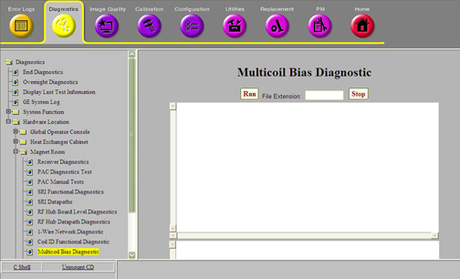
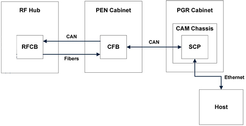
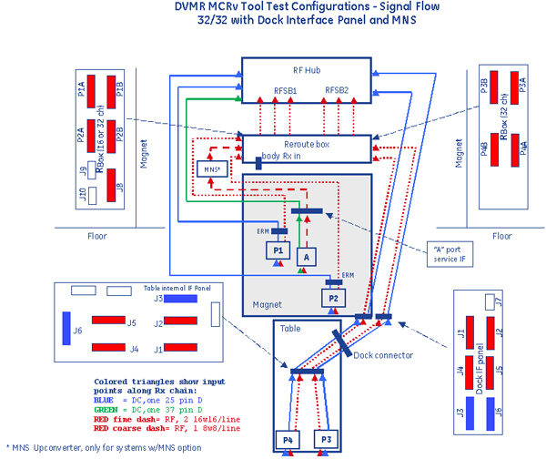
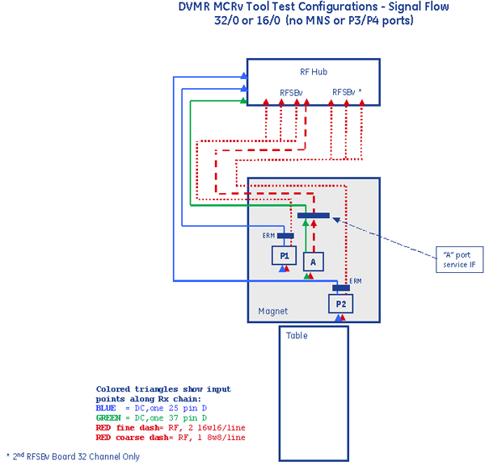

Proprietary to General Electric
Direction 5500113, Rev# 3
Discovery MR450 1.5T Service Methods
Module Version 5.0, Version Date 11/12/09
Proprietary to General Electric |
Diagnostics >> System Function >> RF >> Multicoil Bias Diagnostic
Diagnostics >> Hardware Location >> Magnet Room >> Multicoil Bias Diagnostic
Illustration 1: Multicoil Bias Diagnostic

The Multicoil Bias Diagnostic is used to troubleshoot issues with multicoil bias in the system.
The diagnostic detects the coils that are connected, obtains the multicoil bias settings for those coils from the coil database, and runs through the same tests that are performed before normal scanning. These tests are run three times, and all of the diagnostic screen output and multicoil bias voltages read are written to a log file.
There are three types of multicoil bias faults that the system detects:
Open Circuit Fault – This fault is detected when multicoil bias current is applied, and the voltage generated is 80% of the rail voltage or greater. The rail voltage is either +/- 10V in normal power mode. This fault can only be detected on a connected coil channel.
Short Circuit Fault – This fault is detected when multicoil bias voltage is applied, and the current generated is greater than 70 mA. This fault can be detected on either a connected coil channel, or on an unconnected channel.
Tolerance/Drive Fault – This fault is detected when multicoil bias voltage is applied, and the voltage read back is not within system tolerances, but only if a short circuit is not detected. This fault can be detected on either a connected coil channel, or on an unconnected channel.
RF Hub RFCB
RF Hub MCDB
RF Hub RFSB or RFSBv (For the purposes of this document, RFSB and RFSBv are considered to be the same, even though the connectors are different.)
RF Hub RFCB to LPCA Port A 37 pin cable
MNS Upconverter (when present)
Reroute Box (when present)
Reroute Box to Port A, P1-P4 8W8 and 16W16 cables (when present)
Port A, P1-P2 connectors
P3-P4 connectors (when present)
Coil connected to Port A, P1-P4
None
Illustration 2: Communication Links

Illustration 3: Multicoil Connections from RF Hub to Coils (32/32)

Illustration 4: Multicoil Connections from RF Hub to Coils (32/0 or 16/0)

If a log file extension is desired to track test results, enter up to a 10 character extension in the extension field.
Connect the coil(s) to the system to be tested, or disconnect all coils from the A and P ports to test the system.
Run the Multicoil Bias Diagnostic.
When the diagnostic starts, it will open a log file and display the location. All of the diagnostic screen outputs can be reviewed later in this log file.
The diagnostic will then communicate from the SCP to the RF Hub and display coil information for each coil detected, or display a message saying no coils are detected.
If all hardware communication is successful, and the information about the connected coils can be retrieved from the coil database on the Host, the diagnostic will command the RF Hub to start the multicoil bias checks.
After the multicoil bias checks are complete, the results will be displayed.
For any coil connected, the diagnostic will display either a PASSED or FAILED message for each multicoil bias channel in the coil. The PASSED message is only displayed if there were no multicoil bias faults detected on that channel in all three bias checks run.
Otherwise, the diagnostic will only display a FAILED message for any channel in the system that failed without a coil connected. If no unconnected channels in the system failed, one message will be displayed saying all unconnected channels PASSED.
For any failed channel, the diagnostic will also display the bias mapping and the RFSB mapping for that channel. For any channel in the system, the bias mapping will point to a MCDB or RFCB bias module and channel that is providing that bias. The RFSB mapping will point to any RFSBs and connectors and channels that the given bias is supplied to.
After the bias check results are displayed, the RF Hub board HART information and all multicoil bias check data is written to the log file.
Table 1: Diagnostic Results
| Diagnostic Results | Description | GE Field Action |
| RF Hub communication failure | The SCP cannot communicate to the RF Hub over the CAN link. | Run the RF Hub CAN Fiber Loopback Diagnostic. |
| Coil ID invalid or Coil ID failure | The RF Hub reports an invalid coil ID or a coil ID failure. | Run the Coil ID Functional Diagnostic. |
| RF Hub power supply failure | The RF Hub can’t run the bias checks because a RF Hub power failure was detected. | Run the RF Hub Board Level Diagnostic. Check SRPS power output. |
| Open circuit fault | An open circuit fault is detected on a coil channel. | If another coil is available with the same multicoil bias channels,
run the diagnostic again with that coil. If that coil is known to
be good, and an open circuit fault is still seen, then the problem
is on the system side. Use the Coil Datapath Diagnostic to troubleshoot system open circuits, or to prove that the system does not have open circuits. |
| Short circuit fault on a connected coil | A short circuit fault is detected on a coil channel. | Remove the coil and run the diagnostic again. If the short
circuit fault is still present, then it is not an issue with the coil. If the short circuit fault is not present without the coil, then it is likely that it is a short circuit in the coil. |
| Short circuit fault without a connected coil | A short circuit fault is detected on a channel that does not have a coil connected. | Use the Coil Datapath Diagnostic to troubleshoot system short
circuit faults. Alternatively, the Multicoil Bias Diagnostic can be run with the same troubleshooting procedure as the Coil Datapath Diagnostic to isolate the short circuit in the system. To do this, disconnect ports or cables at the same location as the Coil Datapath Diagnostic and run the Multicoil Bias Diagnostic. If the short circuit goes away at any point, it means that it was in the parts or the interface to the parts that were disconnected. Check for bent pins at every connection. Additionally, the Multicoil Bias Diagnostic can be used to diagnose short circuit faults within the RF Hub. If the short circuit has been isolated to the RF Hub (fault is still seen with the RFCB Port A 37 pin cable and all RFSB cables disconnected), then the following steps can be run to diagnose.
|
| Tolerance/Drive fault | A tolerance/drive fault is detected. | Run the Coil Datapath Diagnostic to diagnose. |